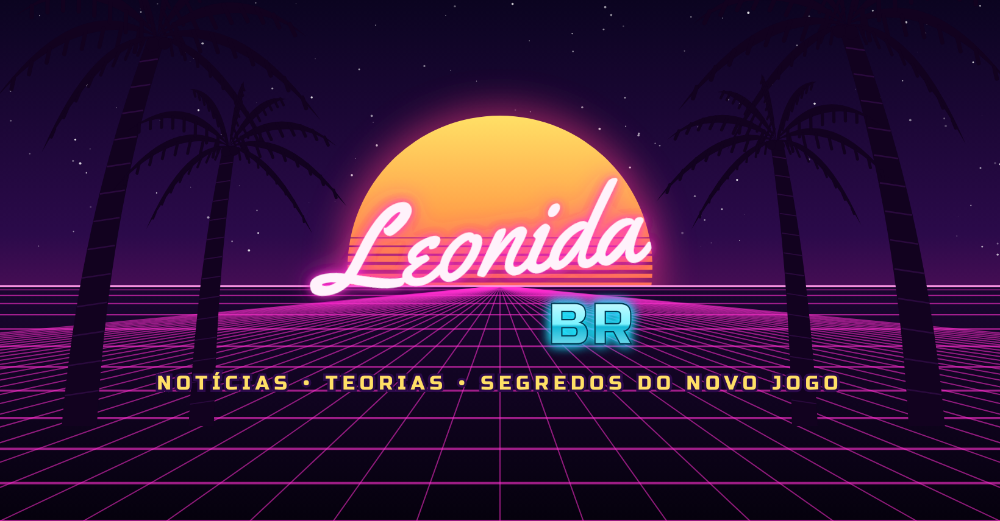

De olho em Leonida
Um novo mundo.
Muitas histórias para descobrir.
A Leonida BR é um projeto editorial brasileiro sobre GTA 6. Reunimos notícias, teorias e detalhes do universo do jogo, distinguindo informações confirmadas, rumores e opiniões.
Conheça nosso canal no YouTube ↗Notícias com fonte
Referências identificadas e revisão editorial antes de compartilhar uma informação.
Teorias identificadas
Espaço para especular e conversar, deixando claro o que ainda não foi confirmado.
Produção própria
Roteiros, narração e edição organizados com aprovação humana antes do envio.
Nosso programa de conteúdo
Usamos um painel local para organizar pautas, produzir vídeos e gerenciar envios às contas autorizadas do projeto. A integração com o TikTok está em configuração e testes.
Entenda o funcionamento e os limites do programa →